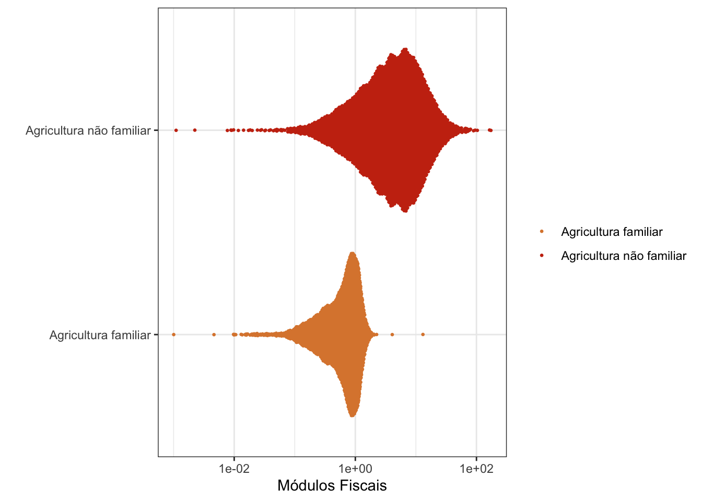
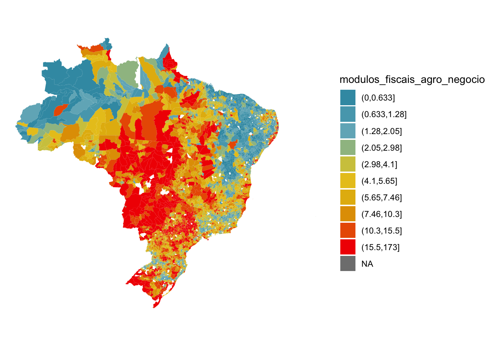

require(tidyverse)
require(readxl)
library(ggbeeswarm)
library(geobr)
library(wesanderson)
### CARREGANDO A TABELA DE ESTABELECIMENTOS, pulamos as 5 primeiras linhas e renomeamos as demais:
df_estab <- read_xlsx("data/tabela6770-2.xlsx", sheet = 1, skip = 5) |>
select(-c(2, 3)) |>
rename(municipio = 1,
estab_agro_negocio = 2,
estab_agro_familiar = 3) |>
slice(-1)
### CARREGANDO A TABELA DE ÁREAS, pulamos as 5 primeiras linhas e renomeamos as demais:
df_area <- read_xlsx("data/tabela6770-2.xlsx", sheet = 2, skip = 5) |>
select(-c(2, 3)) |>
rename(municipio = 1,
area_agro_negocio = 2,
area_agro_familiar = 3) |>
slice(-1)
### Juntando os bancos de dados usando a variavel municipio:
df <- left_join(df_area, df_estab)
## Separando o nome dos municipios e a sigla dos Estados
pattern <- "^(.*?) \\((\\w{2})\\)$"
df_matched <- str_match(df$municipio, pattern)
df$municipio <- tolower(df_matched[, 2])
df$uf <- df_matched[, 3]
### Carregando banco de dados dos modulos fiscais
modulos_fiscais <- read_csv("data/modulos_fiscais.csv") |>
mutate(municipio = tolower(municipio)) |>
rename(uf = UF,
modulos_fiscais = 3) |>
select(-c(4, 5))
### Ajustes finais : União dos bancos de dados e criação de indicadores
df <- left_join(df, modulos_fiscais) |>
filter(modulos_fiscais != 0) |>
mutate(area_media_agro_familiar = area_agro_familiar/ estab_agro_familiar ,
area_media_agro_negocio = area_agro_negocio/ estab_agro_negocio ) |>
mutate(modulos_fiscais_familiar = area_media_agro_familiar/modulos_fiscais,
modulos_fiscais_agro_negocio = area_media_agro_negocio/modulos_fiscais) Censo Agropecuário
Análise exploratória dos dados referentes ao Censo Agropecuário 2017
O objetivo desta análise é evidenciar a concentração fundiária na zona rural do Brasil, comparando, assim, a quantidade de estabelecimentos rurais com a área total destes, utilizando os dados do Censo Agropecuário 2017.
Os dados estão disponíveis em: SIDRA. Neste censo não temos, ou não foi encontrado o acesso aos microdados, por isto as tabelas foram montadas no sítio supracitado.
Outra questão relevante é que cada município possuí uma relação entre a área (em hectares) de um determinado imóvel rural e o numero de módulos fiscais, sendo este valor fixado pelo INCRA. Este módulo fiscal representa a área mínima necessária para que uma propriedade rural seja economicamente viável.
Uma classificação importante dado a quantidade de módulos fiscais é:
- Minifúndio : Imóvel rural menor que 1 módulo fiscal;
- Pequena propriedade: Imóvel rural com área entre 1 e 4 módulos fiscais;
- Média propriedade: Imóvel rural com área entre 4 e 15 módulos fiscais;e
- Grande propriedade: Imóvel com área superior a 15 módulos fiscais.
Tutorial em R:
Carregar os dados
Como foram solicitados os dados, por município, referentes ao número de estabelecimento e o somatório da área destes, separados por agricultura familiar ou não, se tornou necessário sanitizar os bancos de dados obtidos:
É importante observar, por ser um processo de tutorial e de exibição de formas de representação gráfico, que não houve um processo após a união dos dados que garantisse que todos municípios presentes no Censo Agropecuário tivessem seu par referente na tabela que possuí a relação dos módulos fiscais.
Esta não equivalência pode ter sido causada, por exemplo, por pequenas diferenças de gráfias que possam ser dadas a um mesmo município.
Explorando os dados:
Como de conhecimento, a soma das áreas dos imóveis rurais tidos como de agricultura familiar possuem menos área total que aqueles que não são. Encontramos, a partir deste, Censo Agropecuário, que esta relação é de cerca de: *3,5* vezes menos área do que a agricultura não familiar:
df |>
summarise(`Àrea total com agricultura familiar`
= sum(area_agro_familiar, na.rm = T),
`Àrea total com agricultura não familiar`
= sum(area_agro_negocio, na.rm = T)) |>
mutate(`Proporção de áreas` = `Àrea total com agricultura não familiar`/
`Àrea total com agricultura familiar`) # A tibble: 1 × 3
Àrea total com agricultura famil…¹ Àrea total com agric…² `Proporção de áreas`
<dbl> <dbl> <dbl>
1 78858149 261539172 3.32
# ℹ abbreviated names: ¹`Àrea total com agricultura familiar`,
# ²`Àrea total com agricultura não familiar`Completa esta visão geral da concentração fundiária, o fato de que há mais do que 3 vezes mais estabelecimentos agropecuários que são caracterizados pela agricultura familiar:
df |>
summarise(`Estabelecimento totais com agricultura familiar`
= sum(estab_agro_familiar, na.rm = T),
`Estabelecimentos totais com agricultura não familiar`
= sum(estab_agro_negocio, na.rm = T)) |>
mutate(`Proporção de estabelecimentos` = `Estabelecimentos totais com agricultura não familiar`/ `Estabelecimento totais com agricultura familiar`) # A tibble: 1 × 3
Estabelecimento totais com agr…¹ Estabelecimentos tot…² Proporção de estabel…³
<dbl> <dbl> <dbl>
1 3796371 1142960 0.301
# ℹ abbreviated names: ¹`Estabelecimento totais com agricultura familiar`,
# ²`Estabelecimentos totais com agricultura não familiar`,
# ³`Proporção de estabelecimentos`Duas formas de observar a distribuição destas médias de áreas por estabelecimento podem ser vista abaixo:
Por categoria
Primeiramente, veremos, para agricultura familiar ou não, se a área média do estabelecimento rural corresponde a que tipo de propriedade
Usando histograma:
df |>
select(municipio, modulos_fiscais_familiar, modulos_fiscais_agro_negocio) |>
reshape2::melt() |>
rename(Tipo = 2,
"Módulos Fiscais" = 3) |>
mutate(Tipo = ifelse(Tipo == "modulos_fiscais_familiar",
"Agricultura familiar", "Agricultura não familiar")) |>
ggplot(aes(x = `Módulos Fiscais`, fill = Tipo)) +
geom_histogram(cex = 0.5, alpha = 0.7) +
scale_x_log10() +
scale_fill_manual(values = c("#DC863B", "#C93312")) +
theme_bw() +
labs(y = "", fill = "")
Usando beeswarm:
df |>
select(municipio, modulos_fiscais_familiar, modulos_fiscais_agro_negocio) |>
reshape2::melt() |>
rename(Tipo = 2,
"Módulos Fiscais" = 3) |>
mutate(Tipo = ifelse(Tipo == "modulos_fiscais_familiar",
"Agricultura familiar", "Agricultura não familiar")) |>
ggplot(aes(x = `Módulos Fiscais`,
y = Tipo, col = Tipo)) +
geom_quasirandom(cex = 0.5) +
scale_colour_manual(values = c("#DC863B", "#C93312")) +
scale_x_log10() +
theme_bw() +
labs(y = "", col = "")Using municipio as id variablesWarning: Transformation introduced infinite values in continuous x-axisOrientation inferred to be along y-axis; override with
`position_quasirandom(orientation = 'x')`Warning: Removed 55 rows containing missing values (`position_quasirandom()`).Warning: Removed 1 rows containing missing values (`geom_point()`).
Representando em mapa:
## definindo paleta de cores
pal <- wes_palette("Zissou1", 10, type = "continuous")
### Carregando municipios:
quantile(df$modulos_fiscais_familiar, na.rm = T) 0% 25% 50% 75% 100%
0.001003542 0.363754588 0.687084149 0.953226423 13.067777778 mun <-
read_municipality() |>
rename(municipio = name_muni, uf = abbrev_state) |>
mutate(municipio = tolower(municipio)) |>
left_join(df) |> na.omit() |>
mutate(across(
modulos_fiscais_familiar,
.fn = function(x)
cut(x, quantile(x, 0:10 / 10))
)) |> mutate(across(
modulos_fiscais_agro_negocio,
.fn = function(x)
cut(x, quantile(x, 0:10 / 10))
))Using year 2010
|
| | 0%
|
|=== | 4%
|
|===== | 7%
|
|======== | 11%
|
|========== | 15%
|
|============= | 19%
|
|================ | 22%
|
|================== | 26%
|
|===================== | 30%
|
|======================= | 33%
|
|========================== | 37%
|
|============================= | 41%
|
|=============================== | 44%
|
|================================== | 48%
|
|==================================== | 52%
|
|======================================= | 56%
|
|========================================= | 59%
|
|============================================ | 63%
|
|=============================================== | 67%
|
|================================================= | 70%
|
|==================================================== | 74%
|
|====================================================== | 78%
|
|========================================================= | 81%
|
|============================================================ | 85%
|
|============================================================== | 89%
|
|================================================================= | 93%
|
|=================================================================== | 96%
|
|======================================================================| 100%Joining with `by = join_by(municipio, uf)`### Mapa
mun |> ggplot() +
geom_sf(aes(fill = modulos_fiscais_agro_negocio),
color =NA) +
scale_fill_manual(values = pal) +
theme_void()